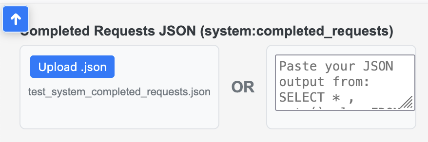

Why Are My Queries Slow?
Slow Couchbase queries can stem from unoptimized N1QL/SQL++ statements, missing indexes, or inefficient data scans. This open-source tool helps you:
- Identify bottlenecks with detailed query analysis.
- Insights provides a quick overview and suggestions.
- Visualize query performance with timelines and metrics.
- NEW 3D Charts Interactive 3D visualizations help identify performance patterns across scopes and collections with depth, making multi-dimensional query analysis intuitive.
← Click the orange 3D button in the Timeline tab to activate 3D visualizations for scopes & collections
Get Started
Run the following query in your Couchbase Query Workbench , Capella Query tab or cbq, then export the results as JSON.
SELECT *, meta().plan FROM system:completed_requests ORDER BY requestId LIMIT 2000;
Open Analyzer — in the upper-left corner, paste or upload your JSON to get instant analysis and suggestions.
Private & Secure: Runs entirely in your browser with no server uploads. Optionally download the HTML to run locally.
Implement index or query changes, then re-run to confirm performance gains.
Need help? Analysis HubFAQs
Run the SQL++ query from 1. Extract Data in Couchbase Query Workbench or Capella Query tab, then export queries as JSON by copying and pasting or saving to a file. For advanced, targeted SQL++ queries to filter JSON results, see Targeted Query Filters.
Also see: Sample (dummy) completed_requests JSON
For a step-by-step workflow to analyze your JSON results, interpret metrics, and debug slow queries, visit the Analysis Hub - Couchbase N1QL Query Optimization Guide & Glossary.
Also see: Targeted Query Filters • Sample (dummy) completed_requests JSON
Open the analyzer and paste or upload your JSON in the upper-left input box, then click Parse JSON. See the placement below:
Note: All data is processed and stored in the brower's memory only
Also see: Open Analyzer
The Couchbase cluster stores a small history of queries that take longer then 1 second. You can query/get this history via system:completed_requests catalog. Run the query from 1. Extract Data in Query Workbench or cbq to collect recent query executions, timing metrics, and the execution plan.
SELECT *, meta().plan FROM system:completed_requests ORDER BY requestId LIMIT 2000;
NOTE: The above query will not get all of the slow query history but rather a small 2000 sample in random order.
Also see: Targeted Query Filters • Sample (dummy) completed_requests JSON
Typical exports are around 9–45 MB. For larger datasets, filter by time range or use Targeted Query Filters.
Large JSON payloads and browser memory limits can impact performance. Try the following:
- Export a smaller dataset (filter by time range or query patterns before exporting).
- Use the Upload option instead of copy/paste to reduce your browser's memory overhead.
- Prefer
 Firefox — it parses and renders large JSON the fastest.
Firefox — it parses and renders large JSON the fastest.
Also see: Targeted Query Filters • Download HTML (en/index.html)
Yes, it is fully compatible with both Couchbase Server and Capella. Just Run the same query from 1. Extract Data in the Query tab in your Capella cluster.
Also see: Couchbase Capella documentation
Run the system:indexes query, then paste or upload the JSON into the upper-right input box of the analyzer. This connects index metadata to your slow queries for the Indexes and Index/Query Flow views.
SELECT
s.name,
s.id,
s.metadata,
s.state,
s.num_replica,
s.`using` AS indexType,
CONCAT("CREATE INDEX ", s.name, " ON ", k, ks, p, w, ";") AS indexString
FROM system:indexes AS s
LET bid = CONCAT("", s.bucket_id, ""),
sid = CONCAT("", s.scope_id, ""),
kid = CONCAT("", s.keyspace_id, ""),
k = NVL2(bid, CONCAT2(".", bid, sid, kid), kid),
ks = CASE WHEN s.is_primary THEN "" ELSE "(" || CONCAT2(",", s.index_key) || ")" END,
w = CASE WHEN s.condition IS NOT NULL THEN " WHERE " || REPLACE(s.condition, '"', "'") ELSE "" END,
p = CASE WHEN s.`partition` IS NOT NULL THEN " PARTITION BY " || s.`partition` ELSE "" END;
See also: Targeted Query Filters • Sample (dummy) system:indexes JSON